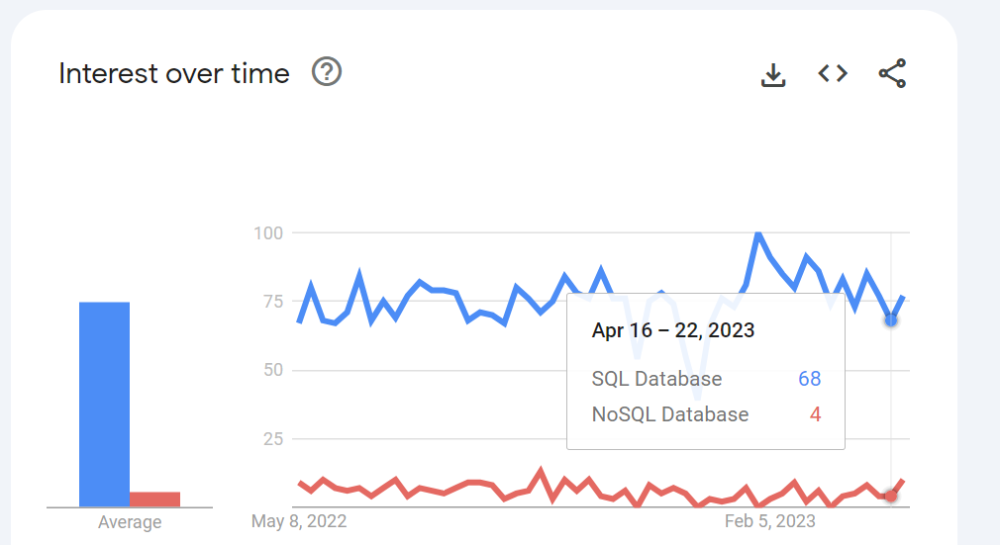

Product: Stack/Internals
The Skinny
"Data is everything."
Attributed to Google
System 100% F#.
- Immutable database wrapper around MongoDB.
- Static type guarantees.
- No null values.
- Generates
MQL(MongoDB Query Language) queries on the fly.
BackEnd 100% MongoDb (infinite capacity)
The Details
Describe Brij
Conceptually, a Database System only has four basic commands: Create, Read, Update, and Delete. A regular SpreadSheet program has many more. Any regular SpreadSheet user - say, a Project Manager or a Startup Founder - should be able to Create a Database Table, associated Forms and DataViews, and operate it without the help of a Development Team.
An application that can allow such a user to perform these tasks without coding would increase business productivity to a staggering extent. Every Project Manager would build and run hundreds of queries on demand. All business users would become de-facto coders.
Note
Technically savvy readers are already probably thinking "You mean NoSQL? But every Database Developer has been trying to build such a system since 50 years!"
Agreed. And yes, we have built it.
Note
Technically savvy readers are now probably thinking "But there are at least a hundred other No-code or Low-code Database Systems in the world today, including Microsoft's PowerApps.
None of the No-Code Systems are Extensible enough for a real Enterprise-use case.
And None of the Low-Code Systems are Easy enough for a Spreadsheet user to use.
How do you see the Database market in 2033?
This is a Google Trends Report. I would expect this to substantially change if not overturn a decade from now.

The Tech Stack
Brij Internals
The
BrijSystem is currently100% F#with aMongoDBbackendThe product currently has NO external dependencies, except for the following 'internal' libraries:
Both of these libraries are used internally by dotNet to compile
F#itself.
Both libraries are also used to compileQ#(Microsoft's Quantum Development Kit).
Mike is familiar enough with both of these libraries that he can write a compiler for a custom toy language from scratch.
In case of any potential copyright issues it would not be unreasonably difficult for Mike or any competent F# developer to roll an adequate handmade version of each of the above. It would be somewhat time consuming, however.
ZERO Dependencies on Outside Code
As such the F# ecosystem has a fairly robust set of external open source libraries which provide missing but expected functionality.
One example is FSharpPlus. This library offers a set of tools including
- Lenses
- A State Monad
- A Continuation Monad.
These are three tools which were needed in Brij, so we hand-rolled custom versions of each - porting the State monad from OCaml and the Continuation monad from Haskell. Lens are commonly used in functional programming circles to work with immutable data; but we found them too cumbersome to use and built a workaround using F# meta-programming facilities coupled with Reflection.
FSharp's MetaProgramming Features
F# has numerous strengths in this area; in fact it is derived from a family of languages that were specifically designed for metaprogramming, the so-called MetaLanguages (ML) family. You will find some details below, these and other F# features are extensively used by Brij.
Code Quotations
FSharp's Code Quotations are close to what you would get with macros in a language like LISP. They allow you to generate expressions programmatically which you can then execute. By using the ReflectedDefinition attribute on F# expressions you can get access to their Abstract Syntax Trees.
Extensive further information on F#'s MetaProgramming features can be found here, especially this research paper by Don Syme, a Principal Researcher at Microsoft and one of the primary designers of the F# language.
The libraries referred to above (FParsec & FsLex/FsYacc) also allow compilation on-the-fly.
A Monadic LINQ Query
The following code snippet builds a monadic F# query. If you are at all familiar with SQL this should resonate. But how would you build this programatically?
query {
for p in products do
sortBy p.Category
thenBy p.ProjectName
thenBy p.SubModName
groupBy (p.Category) into g
let c1Ct = query { for grp in g do count }
let c2 =
...
...
select (g.Key, c1Ct, c2)
}
The output
If the above query is run on a MongoDB instance of products, it produces the following (raw) output ->
Cat1: "Beverages" (13 items)
= = = = = = = = = = = = = = = = = = = = = = =
Cat2: "Eight" (4 items)
Cat3: "Extreme" (1 items)
subQ: seq
[Product Name: Lakkalikööri Categ: Beverages Proj: Eight SubMod: Extreme UnitsInStock: 57]
= = = = = = = = = = = = = = = = = = = = = = =
Cat3: "Low" (2 items)
subQ: seq
[Product Name: Outback Lager Categ: Beverages Proj: Eight SubMod: Low UnitsInStock: 15;
Product Name: Lakkalikööri Categ: Beverages Proj: Eight SubMod: Low UnitsInStock: 5007]
= = = = = = = = = = = = = = = = = = = = = = =
Cat3: "Unknown" (1 items)
subQ: seq
[Product Name: Rhönbräu Klosterbier Categ: Beverages Proj: Eight SubMod: Unknown UnitsInStock: 125]
= = = = = = = = = = = = = = = = = = = = = = =
Cat2: "Five" (1 items)
Cat3: "Unknown" (1 items)
subQ: seq
[Product Name: Ipoh Coffee Categ: Beverages Proj: Five SubMod: Unknown UnitsInStock: 17]
= = = = = = = = = = = = = = = = = = = = = = =
Cat2: "Four" (4 items)
Cat3: "Low" (1 items)
subQ: seq
[Product Name: Chartreuse verte Categ: Beverages Proj: Four SubMod: Low UnitsInStock: 69]
= = = = = = = = = = = = = = = = = = = = = = =
Cat3: "Medium" (2 items)
subQ: seq
[Product Name: Sasquatch Ale Categ: Beverages Proj: Four SubMod: Medium UnitsInStock: 111;
Product Name: Côte de Blaye Categ: Beverages Proj: Four SubMod: Medium UnitsInStock: 17]
= = = = = = = = = = = = = = = = = = = = = = =
Cat3: "Unknown" (1 items)
subQ: seq
[Product Name: Steeleye Stout Categ: Beverages Proj: Four SubMod: Unknown UnitsInStock: 20]
= = = = = = = = = = = = = = = = = = = = = = =
Cat2: "One" (2 items)
Cat3: "High" (1 items)
subQ: seq
[Product Name: Chang Categ: Beverages Proj: One SubMod: High UnitsInStock: 17]
= = = = = = = = = = = = = = = = = = = = = = =
Cat3: "Low" (1 items)
subQ: seq [Product Name: Chai Categ: Beverages Proj: One SubMod: Low UnitsInStock: 39]
= = = = = = = = = = = = = = = = = = = = = = =
Cat2: "Seven" (1 items)
Cat3: "Low" (1 items)
subQ: seq
[Product Name: Laughing Lumberjack Lager Categ: Beverages Proj: Seven SubMod: Low UnitsInStock: 52]
= = = = = = = = = = = = = = = = = = = = = = =
Cat2: "Three" (1 items)
Cat3: "Unknown" (1 items)
subQ: seq
[Product Name: Guaraná Fantástica Categ: Beverages Proj: Three SubMod: Unknown UnitsInStock: 20]
= = = = = = = = = = = = = = = = = = = = = = =
The AST behind the Query
F# Code Quotations allow you to access the AST behind this F# Query, as below ->
Application (Lambda (builder@,
Call (Some (builder@), Run,
[Quote (Call (Some (builder@), Select,
[Call (Some (builder@), For,
[Call (Some (builder@), GroupBy,
[Call (Some (builder@),
ThenBy,
[Call (Some (builder@),
ThenBy,
[Call (Some (builder@),
SortBy,
[Call (Some (builder@),
For,
[Call (Some (builder@)
....
....
(snipped for brevity)
Manipulating the AST
Brij manipulates the AST and compiles it dynamically to generate a new Query on the fly. For further information on this capability, please see this F# man page.
F# REPL
One final MetaPrograming facility Brij uses is the F# REPL (Read-Eval-Print Loop). REPLs facilitate exploratory programming and debugging because the programmer can inspect the printed result before deciding what expression to provide for the next read.
Here is an example of what you can do with a REPL:
Remember the HumVee-like Mars Rover? NASA scientists were controlling it with a LISP program. Something went wrong when the vehicle was on the surface of Mars, and the lead programmer used a REPL to reprogram the vehicle remotely.
For the curious, a marvelous account of this incident can be found on this podcast from Adam Gordon Bell.